04/10/2019 — Hình thái vây cá mập chỉ được bác sĩ cấp cứu nhận ra
Bản dịch tiếng Việt của bài "Shark Fin morphology recognized only by EM physician" – Dr. Smith’s ECG Blog. Giữ nguyên toàn bộ 13 hình ảnh của bản gốc.
Ca bệnh do Alex Bracey gửi, được viết bởi Alex Bracey và Pendell Meyers
Một nam giới ở độ tuổi 70 than đau ngực cấp, sau đó ngừng tim có người chứng kiến. Ông được người xung quanh hồi sinh tim phổi ngay trước khi đội cấp cứu ngoài viện (EMS) đến. EMS thấy ông đang rung thất (VF) và đã sốc điện 4 lần, dùng nhiều liều epinephrine và amiodarone, có tái lập tuần hoàn tự nhiên (ROSC) từng lúc; tuy nhiên khi đến khoa cấp cứu (ED) ông vẫn trong tình trạng ngừng tim và đang được hồi sinh tim phổi bằng thiết bị LUCAS. Tổng thời gian ngừng tuần hoàn (down time) là 35 phút, tính từ lúc ngừng tim đến lúc tới ED.
Lần kiểm tra nhịp đầu tiên tại ED cho thấy hoạt động điện vô mạch (PEA) với phức bộ rộng, tần số khoảng 30 lần/phút. Đã tiêm calci và epinephrine và tiếp tục hồi sinh tim phổi. Bệnh nhân được đặt nội khí quản, đặt đường truyền động mạch và tĩnh mạch trung tâm. Lần kiểm tra nhịp tiếp theo cho thấy nhịp QRS rộng tần số 78 lần/phút, có mạch trên đường động mạch. Bắt đầu truyền norepinephrine để duy trì huyết áp.
Một điện tâm đồ được ghi ngay:

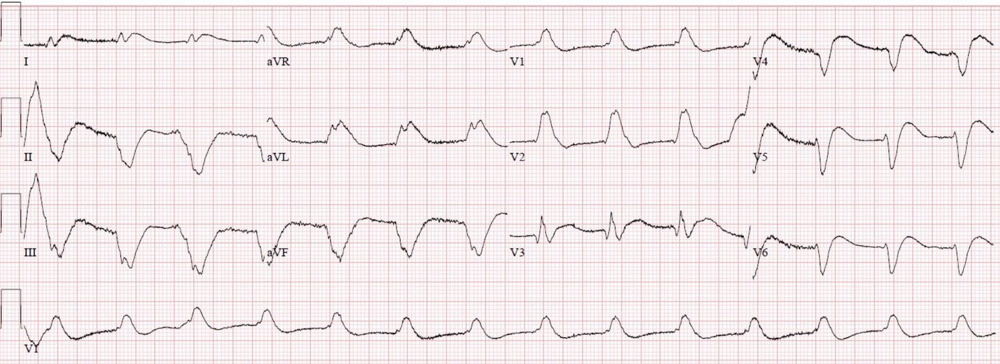
Có nhịp QRS rộng đều, tần số khoảng 85 lần/phút. Phức bộ QRS là thêm một ví dụ về “hình thái vây cá mập” (shark fin morphology), gồm RBBB và LAFB, chồng lên đó là ST chênh lên (STE) rất lớn ở các chuyển đạo trước-bên.
Như bạn còn nhớ từ bài viết gần đây của chúng tôi,
Khi QRS rộng, điểm J sẽ ẩn.
Dĩ nhiên, bước tiếp theo của bạn là:
Dò nó xuống và sao chép nó sang.
Đây là kết quả:

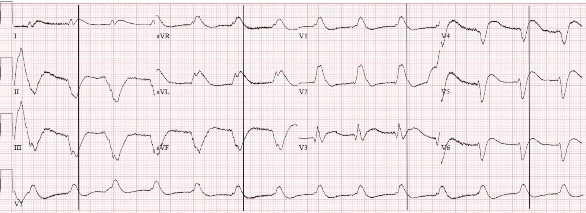
Bình luận của Meyers: Alex gửi cho tôi điện tâm đồ này mà không kèm thông tin lâm sàng nào, và phản ứng tức thì của tôi là: “Vây cá mập! Bệnh nhân này nhiều khả năng đang sau ROSC hoặc quanh thời điểm ROSC, đúng không? Tắc LAD.” Sau đó tôi gửi cho Dr. Smith và ông nói: “Lại một vây cá mập nữa. Phải là hiển nhiên chứ.”
Phòng thông tim được kích hoạt ngay dựa trên điện tâm đồ này.
Xét nghiệm iStat cho thấy hạ kali máu 2,2 mEq/L và pH 7,08 (khí máu tĩnh mạch, VBG). Bệnh nhân được dùng 300 mg aspirin (ASA) đường trực tràng và nạp 4000U heparin.
Ngay sau khi thiết lập được nhịp có tưới máu, bệnh nhân nôn khan và ho chống lại ống nội khí quản, cho thấy các phản xạ thân não còn nguyên vẹn.
Bệnh nhân bị rung thất (VFib) tái phát nhiều lần, cần khử rung và mỗi lần đều có ROSC. Truyền epinephrine liên tục được thêm vào để tăng co bóp cơ tim.
Nhóm tim mạch đến và một điện tâm đồ ghi lại khác được thực hiện:

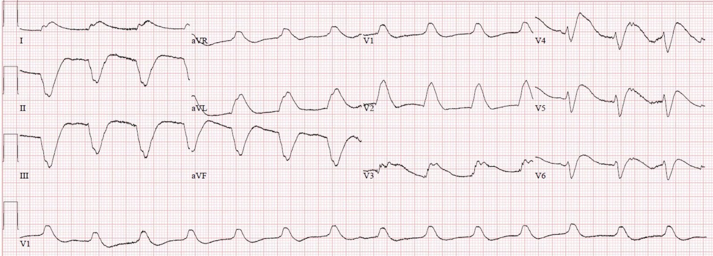

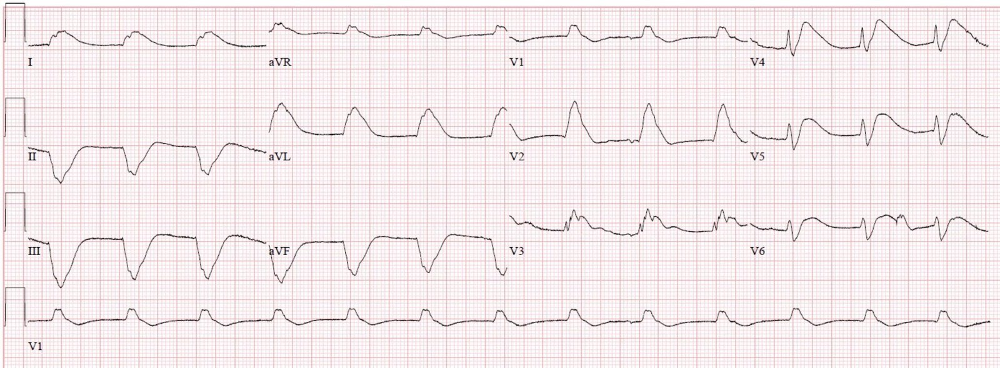
Tổng cộng, bốn bác sĩ tim mạch cho rằng các điện tâm đồ này “không thể hiện một STEMI”, và họ cho rằng các bất thường điện tâm đồ nhiều khả năng là do “tăng kali máu” (cho đến khi kết quả K trả về là 2,2 mEq/L), “rối loạn chuyển hóa” và “thời gian ngừng tuần hoàn”. Khi bác sĩ cấp cứu cố chỉ cho họ thấy điểm J nằm ở đâu, làm nổi bật ST chênh lên rất lớn ở thành trước-bên, thì lúc đầu điều đó đơn giản là không được chấp nhận trong bối cảnh phức bộ QRS rộng.
Bác sĩ điều trị chính tại ED kiên trì khẳng định rằng điện tâm đồ và bệnh cảnh lâm sàng có giá trị chẩn đoán tắc LAD đoạn gần hoặc thậm chí tắc thân chung động mạch vành trái, vì đã thấy hình ảnh này nhiều lần trước đây trên blog này.
Dĩ nhiên, troponin T ban đầu không phát hiện được, dưới 0,01 ng/mL, khiến công việc của bác sĩ điều trị chính tại ED càng khó khăn hơn.
Ghi chú bên lề: trong nghiên cứu gần đây của chúng tôi trên 467 bệnh nhân hội chứng vành cấp (ACS) nguy cơ cao trong 6 tháng, chúng tôi thấy 108 ca có OMI được chứng minh. Trong 108 ca đó, 25% có troponin ban đầu không phát hiện được! Kết quả còn thú vị hơn khi phân tầng theo thời gian triệu chứng do bệnh nhân khai (xem bên dưới). Xét nghiệm troponin T thế hệ hiện hành (contemporary) của chúng tôi dường như không tăng cho đến ít nhất 3 giờ sau khi tắc mạch kéo dài.

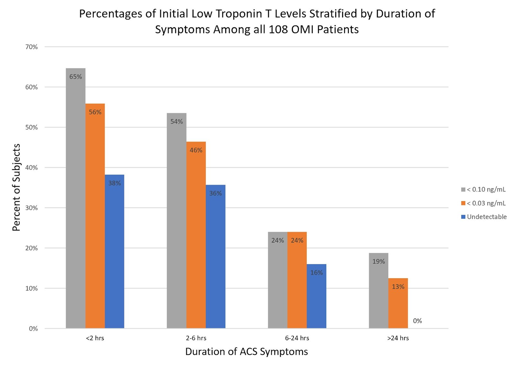
Sau 30 phút thảo luận, một điện tâm đồ khác được ghi:

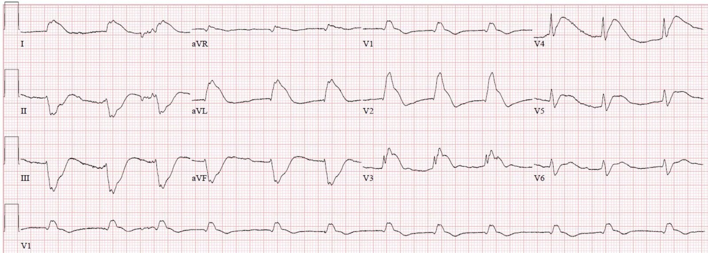
Trong điện tâm đồ này QRS có tổ chức hơn một chút, và có vẻ như bác sĩ điều trị chính tại ED cuối cùng đã thuyết phục được các bác sĩ tim mạch về vị trí của điểm J.
Cuối cùng bệnh nhân được thông tim cấp cứu, cho thấy tắc LAD đoạn gần cấp tính do huyết khối (100%, dòng chảy TIMI 0), được đặt stent với kết quả chụp mạch rất tốt. Ngoài ra cũng ghi nhận bệnh động mạch vành (CAD) lan tỏa, nhưng không có thủ phạm cấp tính nào khác hay can thiệp nào khác.

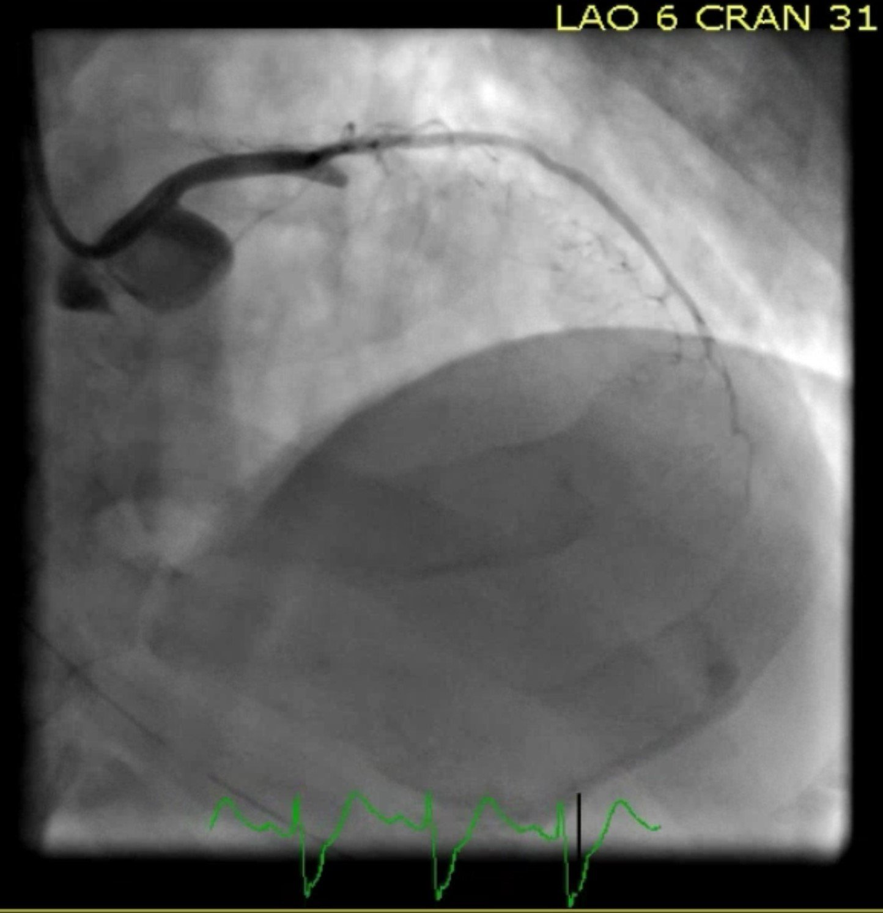

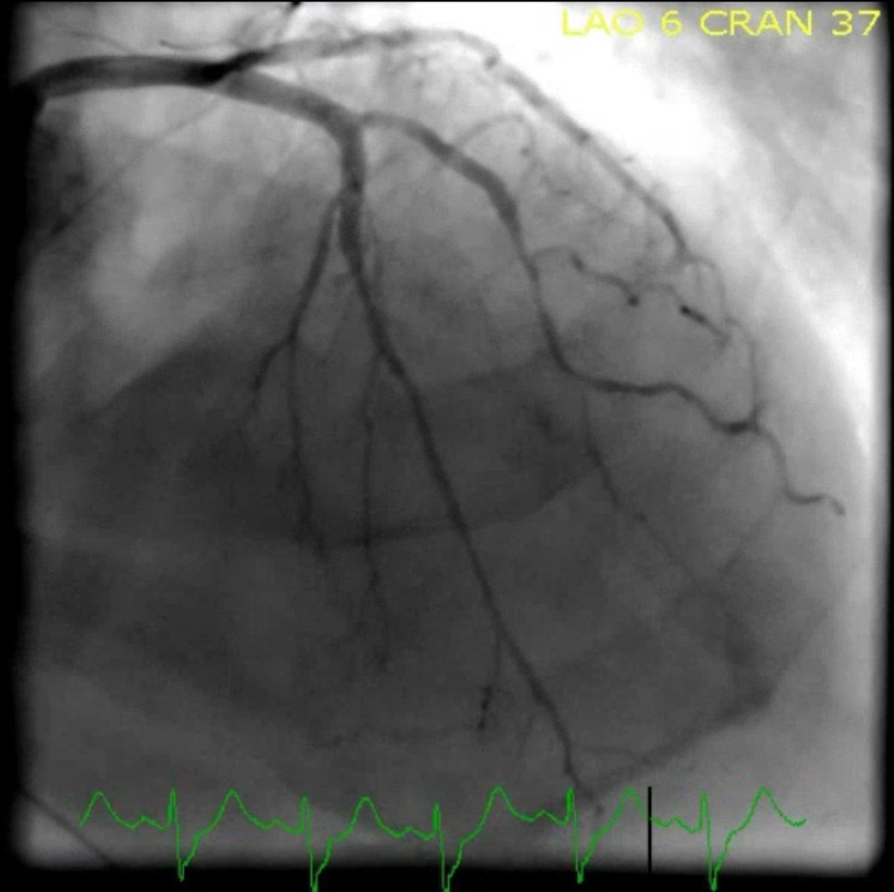
Tái tưới máu trên phim chụp mạch có đảm bảo tái tưới máu thực sự ở cơ tim phía hạ lưu không? Không! Như chúng tôi đã chứng minh nhiều lần, kể cả trong bài viết được nhiều người đọc này:
Shoulder pain after lifting a heavy box (Đau vai sau khi nâng một chiếc hộp nặng)
Vậy đây là điện tâm đồ sau tái tưới máu, hãy tự quyết định xem cơ tim thực sự đã được tái tưới máu hay chưa:

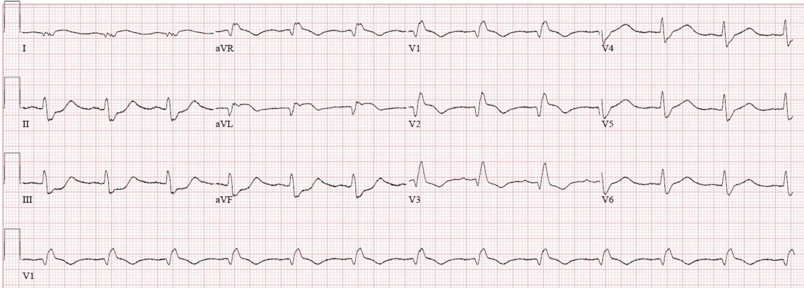
Điện tâm đồ này cho thấy phức bộ QRS có tổ chức hơn, RBBB vẫn tồn tại nhưng không còn LAFB, và ST chênh lên giảm ở các chuyển đạo trước-bên kèm phần cuối sóng T đảo ngược ở aVL, V1-V3, tất cả đều cho thấy có tái tưới máu ở phía hạ lưu.
Thêm vài điện tâm đồ liên tiếp được ghi trong 24 giờ sau đó, cho thấy diễn tiến của quá trình tái tưới máu:

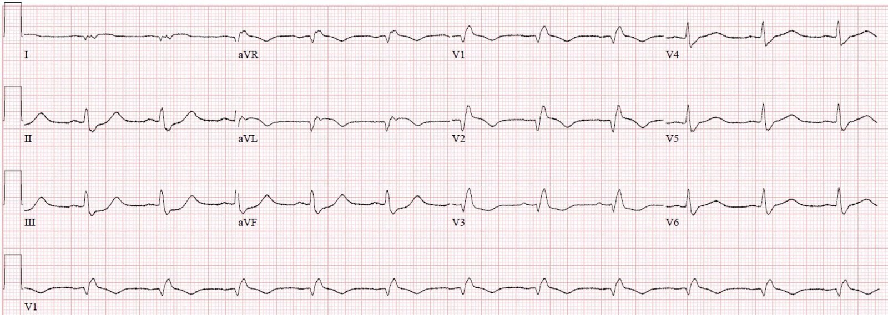
Sáng hôm sau:

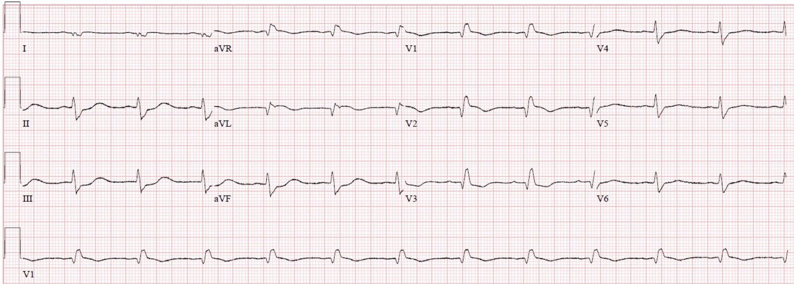
Chưa đầy 24 giờ sau khi nhập viện, ông đã làm theo y lệnh và nhận ra gia đình mình.
Troponin T đỉnh là 13,06 ng/mL (nhồi máu cơ tim rất lớn). Siêu âm tim cho thấy EF 30-35%, nhưng các mặt cắt không đủ tốt để đánh giá rối loạn vận động thành.
Các điện tâm đồ này rõ ràng có ST chênh lên đáp ứng tiêu chuẩn STEMI kinh điển (giả định bạn hiểu câu chữ của hướng dẫn là tiêu chuẩn áp dụng được trong tình huống QRS này — tôi hiểu như vậy, nhưng chỉ vừa đủ). Do đó, đây là một OMI STEMI dương tính (STEMI(+) OMI). Bản thân tôi đã được hơn một bác sĩ tim mạch nói rằng những tình huống như thế này không áp dụng tiêu chuẩn STEMI vì, tương tự quan điểm lỗi thời của họ về LBBB, “bạn không thể biết có STEMI hay không trong một QRS như thế này.”
Dù tiêu chuẩn STEMI được đáp ứng rõ ràng, chẩn đoán trong hồ sơ bệnh án và trong biên bản thông tim lại là “NSTEMI“.
Những điểm cần học:
Bạn nhất định phải nhận ra được OMI trong bối cảnh nhịp QRS rộng, vì mô hình STEMI vs. NSTEMI hiện nay và nền giáo dục điện tâm đồ chính thống hiện nay có rất ít điều để giúp những bệnh nhân như vậy.
Khi QRS rộng, điểm J sẽ ẩn, vì vậy hãy dò nó xuống và sao chép nó sang.
Hãy ghi nhớ hình thái ST chênh lên kiểu “vây cá mập” này để nó trở nên dễ nhận ra ngay tức thì, vì đây là một số bệnh nhân nặng nhất, cần thông tim cấp cứu nhất. Vây cá mập là sự hợp nhất giữa QRS và ST chênh lên, và trong một số ca khác trên blog, dù QRS rộng, phần lớn nhất của độ rộng đó là đoạn ST. Trong ca này, phần lớn thực sự là QRS. Dưới đây là các ví dụ khác:
“Shark Fin”: A Deadly ECG Sign that you Must Know! (“Vây cá mập”: một dấu hiệu điện tâm đồ chết người mà bạn phải biết!)
“Shark fin” ECG in I, aVL, V4 and V5. Which artery? Hint: patient is in shock and was put on ECMO (Điện tâm đồ “vây cá mập” ở các chuyển đạo trên. Động mạch nào? Gợi ý: bệnh nhân bị sốc và được đặt ECMO)
Refractory V FIb Arrest, put on ECMO, regains an organized rhythm, and a 12-lead is recorded. (Ngừng tim do rung thất kháng trị, được đặt ECMO, lấy lại nhịp có tổ chức, và một điện tâm đồ đầy đủ các chuyển đạo được ghi.)
Giant R-waves. What are they? (Sóng R khổng lồ. Chúng là gì?)
Wide Complex Tachycardia; It’s really sinus, RBBB + LAFB, and massive ST elevation (Nhịp nhanh QRS rộng; thực ra là nhịp xoang, RBBB + LAFB, và ST chênh lên rất lớn)
Tắc LAD và/hoặc thân chung (LM) diện rộng thường gây blốc nhánh, kinh điển là RBBB + LAFB hoặc RBBB + LPFB, làm QRS rộng ra và làm các biến đổi đoạn ST khó thấy hơn.

===================================
Bình luận của KEN GRAUER, MD (4/10/2019):
===================================
Chúng tôi xin CẢM ƠN (!) — Dr. Bracey & Dr. Meyers vì bài viết quan trọng này, minh họa hình thái Vây Cá mập (Shark Fin) của STEMI cấp kèm QRS giãn rộng rõ rệt. Xin dành sự ghi nhận to lớn cho nhóm điều trị bệnh nhân này vì một ca cứu sống phi thường! Từ góc độ điện tâm đồ — tôi giới hạn Bình luận của mình ở một nhận xét về nhịp tim …
- Có 8 bản ghi được trình bày trong bài viết này. Bản ghi thứ 2 được thêm các đường thẳng đứng để chỉ vị trí điểm J — vì vậy bản ghi thứ 2 này không phải một điện tâm đồ “mới”. Điều này có nghĩa là tổng cộng có 7 điện tâm đồ đã được ghi trong ca này.
Để cho rõ — cách đánh số các điện tâm đồ mà tôi đề cập bỏ qua bản ghi có vẽ các đường thẳng đứng để đánh dấu điểm J.
- LƯU Ý: Chúng ta không thấy bất kỳ sóng P nào cho đến điện tâm đồ thứ 5 được ghi. Tôi luôn tìm sóng P trước tiên ở chuyển đạo II — vì nhịp xoang được định nghĩa bởi sự hiện diện của sóng P dương có dẫn truyền ở chuyển đạo này. Tiếp theo tôi tìm sóng P ở chuyển đạo V1 (nói chung là chuyển đạo tốt thứ 2 để nhận diện sóng P) — rồi đến 10 chuyển đạo còn lại trên bản ghi. Không có sóng P cho đến điện tâm đồ thứ 5 …
- Nhịp QRS rộng khá đều trong 3 điện tâm đồ đầu tiên được ghi.
- Sau đó nhịp trở nên không đều hoàn toàn ở điện tâm đồ thứ 4 được ghi — mà hình thái QRS rộng không thay đổi đáng kể.
- Sóng P xoang thấy rõ bắt đầu từ điện tâm đồ thứ 5. Nhịp lại đều ở điện tâm đồ thứ 5 này — và điều này đi kèm với việc phức bộ QRS hẹp lại phần nào, cùng với thay đổi đáng kể về hình thái QRS (tức là trục ít lệch trái hơn; xuất hiện sóng Q rõ ở các chuyển đạo bên cao và chuyển đạo trước, tất cả đi kèm với RBBB).
- Nhịp xoang đều vẫn duy trì ở 2 điện tâm đồ cuối cùng ( = điện tâm đồ #6 và #7) — không có thêm thay đổi về hình thái QRS.
ĐIỀU CỐT LÕI: Tôi không chắc các nhịp ban đầu là gì … — nhưng chúng không phải nhịp xoang. Hình thái vây cá mập đã hiện diện — điều này cho phép nhận ra STEMI cấp bất chấp QRS giãn rộng rõ rệt.